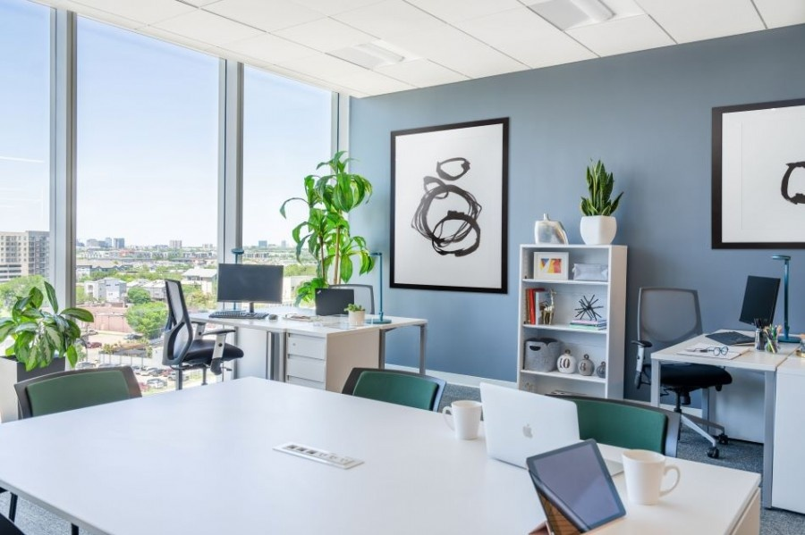

Здравейте! Направихме този сайт за проекта ни по Информационни технологии на тема „Компютърна система“. Тук събрахме на едно място най-важното за компютрите – от първите дървени сметала в древността до бързите процесори, които използваме днес за игри и учене. В сайта ще намерите също интересни факти за първите български компютри „Правец“, както и как точно работят частите вътре в компютъра – като процесора и оперативната памет. Приятно четене! |
 |